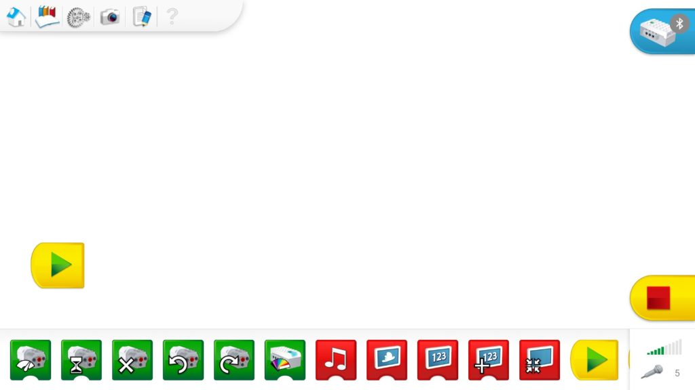
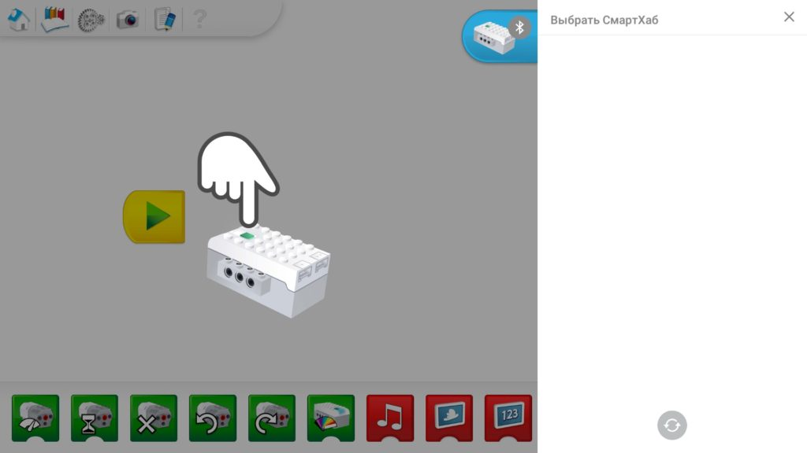
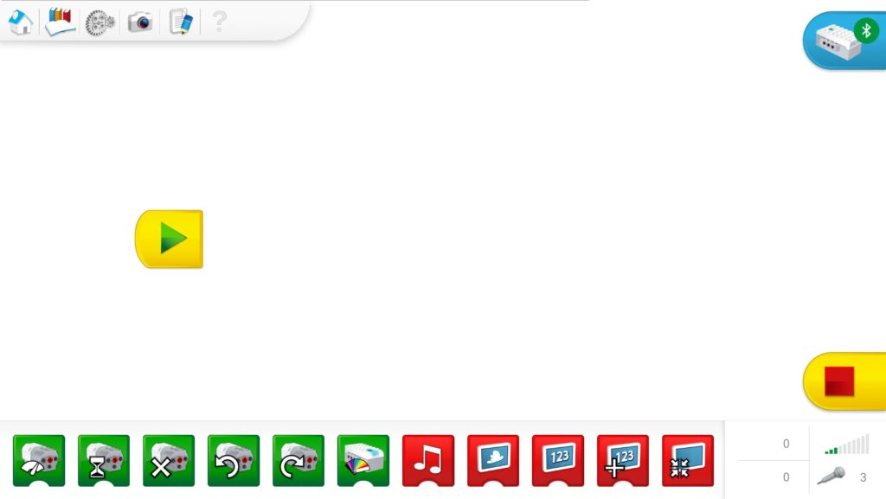

Одним из основных нововведений в образовательном наборе WeDo 2.0 стало внедрение технологии Bluetooth, что сделало модели роботов полностью автономными. Это стало возможным благодаря обновлению функционала центрального блока набора – смартхаба. Смартхаб (Smarthub) представляет собой интеллектуальный блок управления, к которому подключаются исполнительные устройства, такие как двигатели и датчики. В свою очередь, смартхаб соединяется с ноутбуком, компьютером или планшетом для получения команд управления. По сути, смартхаб является «сердцем» каждого робота.

Сначала нужно обеспечить питание смартхаба, установив в него две батареи типа АА. Убедитесь в работоспособности батареек. Теперь смартхаб готов, и его можно отложить в сторону, чтобы перейти к настройке вашего устройства.
Так как смартхаб является Bluetooth-устройством – переходим в соответствующую панель настроек.

Жмём «+», чтобы добавить новое устройство Bluetooth.

Выбираем Bluetooth «Мыши, клавиатуры и др.типы устройств». Как только появляется диалоговое окно поиска новых устройств, нажимаем зеленую кнопку на смартхабе – он активируется и отправляет сигналы на приёмный Bluetooth модуль ноутбука.
Если на текущий момент все выполнялось правильно в окне поиска новых устройств отобразится смартхаб с именем «LPF2 Smart Hub 2 I/O». Выбираем появившийся смартхаб, в первый момент он переходит в режим «Подключено», а буквально через мгновение в режим «Связано» («Сопряжено»).

Жмём кнопку «Готово». В окне Bluetooth устройств должен появиться сопряженный с ноутбуком смартхаб.

Затем запускаем программу WeDo 2.0 и попадаем в главное окно программы. В правом верхнем углу находим символ смартхаба со значком Bluetooth и жмём на него.
Справа появляется окно поиска смартхабов, а слева визуальная инструкция необходимых действий: парящая в воздухе рука пытается нажать на зеленую кнопку смартхаба, что и нужно нам сделать. Смартхаб традиционно активируется и отправляет запрос ведущему устройству – ноутбуку.
Получив ответ, индикатор смартхаба загорится ярким синим цветом, что символизирует успешное подключение. Через несколько секунд подключенный смартхаб появится в диалоговом окне справа. А слева парящая рука покажет поднятый палец вверх «ОК».
В диалоговом окне мы можем узнать заряд батарей смартхаба, а также присвоить ему уникальное имя, чтобы не спутать с другими смартхабами при одновременном подключении. Делается это очень просто – нажимается иконка с карандашом – открывается режим редактирования имени смартхаба – вводим требуемое имя и жмём «ОК».

На этом подключение и настройка завершена! Самое время написать свою первую программу. Рекомендуем для этого посмотреть видео уроки или материалы из раздела "Книги".
